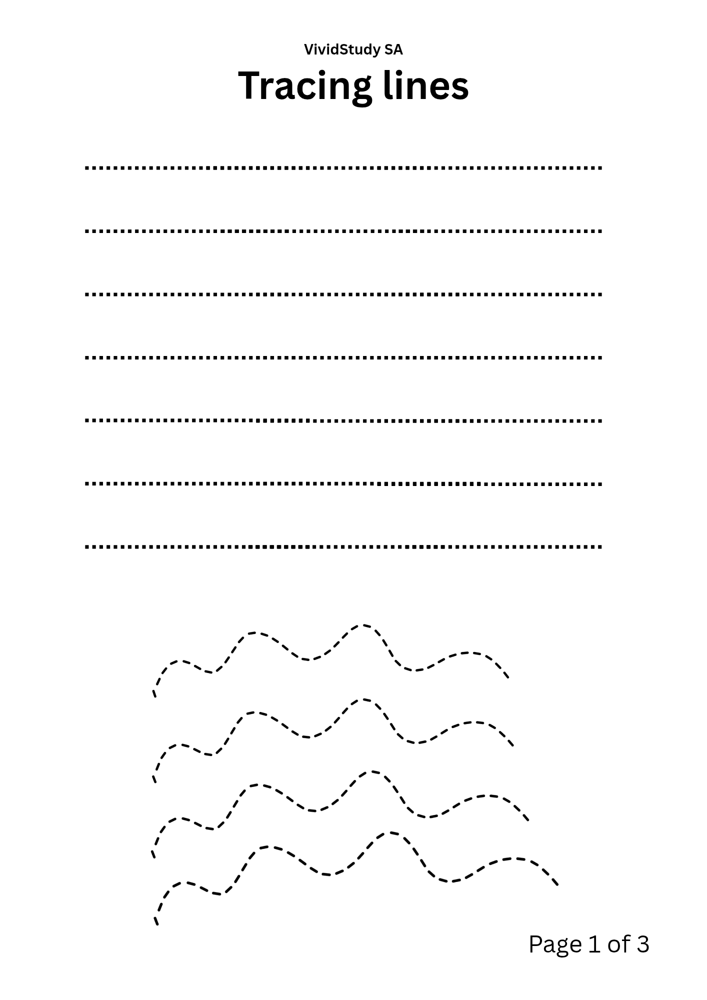

Tracing Lines

Grade: Grade R and Grade 1
Subject: Fine motor skills
Pages: 1
Helps young learners practise pencil control by tracing straight, zigzag and curved lines. Print it on A4 paper and let your child trace with a pencil.
Download free PDF